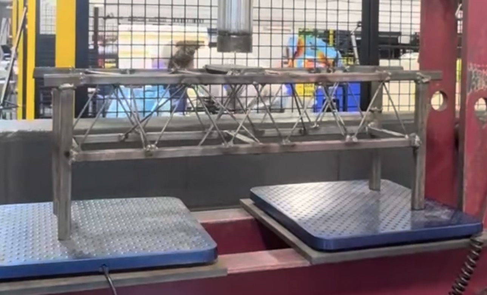

01 / Project overview
I am participating in a student Steel Bridge team project that is still underway. So far, our team has constructed a bridge model from popsicle sticks and built a steel replica based on that model.
These two versions give us an opportunity to compare a lightweight physical concept model with an assembly made from steel members. The work has provided practical exposure to bridge geometry, member arrangement, and the process of translating a model into a fabricated structure.
02 / Popsicle-stick bridge model

We began with a popsicle-stick model to visualize the bridge's overall shape and arrangement of members. The model uses repeated triangular bracing along its sides, creating a physical reference for the next fabrication stage.
Working at this scale made the layout easier to examine before moving to steel, especially how the upper and lower members connect through diagonal and vertical elements.
03 / Steel replica
After completing the initial model, our team recreated the bridge in steel. The steel version follows the same general arrangement of upper and lower members connected by diagonal bracing.
Moving from popsicle sticks to steel introduced a different set of practical considerations: the size and positioning of members, how they meet at joints, and how to maintain the intended bridge geometry during assembly.
The photo documents the steel replica in a workshop setting. No load capacity or competition performance is claimed at this stage.

04 / Design-to-fabrication process
The project highlights the difference between a concept that can be assembled at small scale and one that must be physically built using metal components.
05 / What I am learning
As a member of the team, I am gaining hands-on exposure to structural modeling, fabrication, and collaborative problem-solving. Seeing the same bridge configuration in two materials has helped connect classroom ideas about structural systems with the practical details of physical assembly.
Because the project is still underway, this page will be updated as the team completes additional design work, testing, or competition milestones.